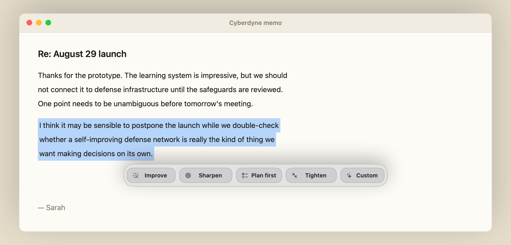

Improve
Everyday prose
Mancia rewrites selected text in place across macOS apps with GitHub Copilot CLI, without opening a chat window.
Works in apps with standard Copy, Select All, and Paste.

Everyday prose
Coding-agent requests
Investigate before changes
Dense requirements
Tone and format
Use chat for exploration. Use Mancia when the text is already in front of you and the job is to change it.
The ribbon opens below or above a short selection and beside a tall block, so the words remain visible.
Press ⌘Z to restore the previous version Mancia applied during the current session.
Mancia snapshots the pasteboard around capture and replacement, then restores what it held.
With no selection, Mancia targets the document and shows the character-count change before replacing it by default.